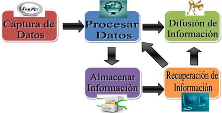

El proceso de un sistema de información incluye los siguientes pasos:
1. Identificación de necesidades: en esta etapa se identifican las necesidades de información de la organización, es decir, el tipo de datos que se necesitan para llevar a cabo las tareas y alcanzar los objetivos.
2. Recopilación de datos: una vez identificadas las necesidades, se procede a recopilar los datos necesarios para el sistema de información. Estos datos pueden provenir de diferentes fuentes, como bases de datos, encuestas, entrevistas, entre otros.
3. Análisis de datos: una vez que se han recopilado los datos, se procede a analizarlos para identificar patrones, tendencias y relaciones entre ellos. El análisis de datos es crucial para obtener información valiosa y útil.
4. Almacenamiento de datos: después de analizar los datos, éstos se almacenan en una base de datos para su posterior uso. Es importante tener un sistema de almacenamiento adecuado para garantizar la integridad y seguridad de los datos.
5. Procesamiento de datos: una vez almacenados, los datos se procesan para convertirlos en información útil. En esta etapa se utiliza software especializado para convertir los datos en información comprensible y útil para el usuario.
6. Distribución de información: finalmente, la información generada por el sistema de información se distribuye entre los usuarios que la necesitan. La distribución puede ser en forma de informes, gráficos, tablas, entre otros formatos, dependiendo de las necesidades de cada usuario.
